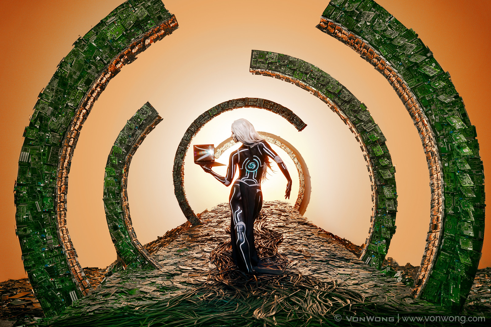

Go back

-
Object Database Number: 20
-
What is it: Photographies of humans looking divine among e-waste
-
Access: Link to Website
-
When was it made: 2017
-
By who: Benjamin Von Wong
-
For who: Individuals who will tell their friends and family about recycling
-
Where is it experienced: Online on Benjamin Von Wongs website and on various social media sites
-
Description: The project was made by 50 volunteers over 10 days who came and together, and build the set pieces of 2 tons of electronic waste. It was made in collaboration with the computer company Dell.
-
Week/theme: Week 46 - Maintenance and Repair
-
Identity: Political
-
Materiality: Physical